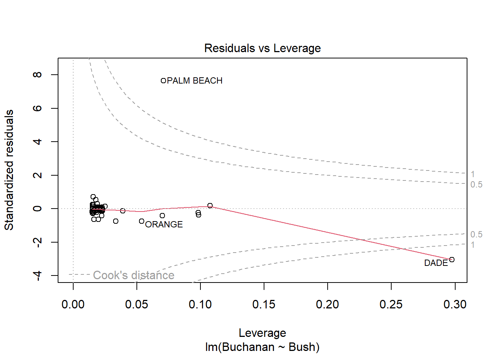

Code
library(tidyverse)
library(smss)
library(alr4)library(tidyverse)
library(smss)
library(alr4)The answers for this question refer to the house.selling.price.2 data set in the smss package.
data(house.selling.price.2)
model_1 <- lm(data = house.selling.price.2,P ~ S + Be + Ba + New)
model_2 <- lm(data = house.selling.price.2,P ~ S + Ba + New)Using backward elimination, the first variable to be deleted would be beds as it has the highest p-value.
Using forward selection, the first variable to be added would be new as it has the lowest p-value.
I think beds has a large p-value in the regression model, even though it’s highly correlated with price, because multicollinearity exists between beds and size.
Below are 2 different models: one with all variables and one with beds removed as it did not have a significant p-value in the original model.
summary(model_1)
Call:
lm(formula = P ~ S + Be + Ba + New, data = house.selling.price.2)
Residuals:
Min 1Q Median 3Q Max
-36.212 -9.546 1.277 9.406 71.953
Coefficients:
Estimate Std. Error t value Pr(>|t|)
(Intercept) -41.795 12.104 -3.453 0.000855 ***
S 64.761 5.630 11.504 < 2e-16 ***
Be -2.766 3.960 -0.698 0.486763
Ba 19.203 5.650 3.399 0.001019 **
New 18.984 3.873 4.902 4.3e-06 ***
---
Signif. codes: 0 '***' 0.001 '**' 0.01 '*' 0.05 '.' 0.1 ' ' 1
Residual standard error: 16.36 on 88 degrees of freedom
Multiple R-squared: 0.8689, Adjusted R-squared: 0.8629
F-statistic: 145.8 on 4 and 88 DF, p-value: < 2.2e-16summary(model_2)
Call:
lm(formula = P ~ S + Ba + New, data = house.selling.price.2)
Residuals:
Min 1Q Median 3Q Max
-34.804 -9.496 0.917 7.931 73.338
Coefficients:
Estimate Std. Error t value Pr(>|t|)
(Intercept) -47.992 8.209 -5.847 8.15e-08 ***
S 62.263 4.335 14.363 < 2e-16 ***
Ba 20.072 5.495 3.653 0.000438 ***
New 18.371 3.761 4.885 4.54e-06 ***
---
Signif. codes: 0 '***' 0.001 '**' 0.01 '*' 0.05 '.' 0.1 ' ' 1
Residual standard error: 16.31 on 89 degrees of freedom
Multiple R-squared: 0.8681, Adjusted R-squared: 0.8637
F-statistic: 195.3 on 3 and 89 DF, p-value: < 2.2e-16If using only the value for R-squared to determine the best fitting model I would select the model using all variables as it’s higher, albeit barely, than the model without beds as seen above.
If using only the value for adjusted R-squared to determine the best fitting model I would select the model without beds as it’s slightly higher than the model with all variables as seen above.
If using only the PRESS statistic to determine the best fitting model, I would select the model without the variable beds. As seen below, P ~ S + Ba + New has the lowest PRESS statistic.
# PRESS function
PRESS <- function(model) {
i <- residuals(model)/(1 - lm.influence(model)$hat)
sum(i^2)
}P ~ S + Be + Ba + New
PRESS(model_1)[1] 28390.22P ~ S + Ba + New
PRESS(model_2)[1] 27860.05If using only the value for AIC to determine the best fitting model, I would select the model without the variable beds. As seen in the summary below, P ~ S + Ba + New has the lowest AIC.
step(object = model_1, direction = "backward")Start: AIC=524.7
P ~ S + Be + Ba + New
Df Sum of Sq RSS AIC
- Be 1 131 23684 523.21
<none> 23553 524.70
- Ba 1 3092 26645 534.17
- New 1 6432 29985 545.15
- S 1 35419 58972 608.06
Step: AIC=523.21
P ~ S + Ba + New
Df Sum of Sq RSS AIC
<none> 23684 523.21
- Ba 1 3550 27234 534.20
- New 1 6349 30033 543.30
- S 1 54898 78582 632.75
Call:
lm(formula = P ~ S + Ba + New, data = house.selling.price.2)
Coefficients:
(Intercept) S Ba New
-47.99 62.26 20.07 18.37 If using only the value for BIC to determine the best fitting model, I would select the model without the variable beds. As seen below, P ~ S + Ba + New has the lowest BIC.
P ~ S + Be + Ba + New
BIC(model_1)[1] 805.8181P ~ S + Ba + New
BIC(model_2)[1] 801.7996The model I would select as best fitting is the one without beds, P ~ S + Ba + New. This model is the best fitting using each criterion, except when looking at R-squared. R-squared isn’t the best measure to examine anyways, though, as it increases as predictor variables are added even if the variables aren’t significant. I also believe there is multicollinearity between size and beds, so removing beds addresses this issue.
Question two uses the data set trees.
data("trees")Below is the regression model Volume ~ Girth + Height. It has a very high adjusted R-squared and all variables have a significant p-value. This indicates a good fitting model.
model_2a <- lm(data = trees, Volume ~ Girth + Height)
summary(model_2a)
Call:
lm(formula = Volume ~ Girth + Height, data = trees)
Residuals:
Min 1Q Median 3Q Max
-6.4065 -2.6493 -0.2876 2.2003 8.4847
Coefficients:
Estimate Std. Error t value Pr(>|t|)
(Intercept) -57.9877 8.6382 -6.713 2.75e-07 ***
Girth 4.7082 0.2643 17.816 < 2e-16 ***
Height 0.3393 0.1302 2.607 0.0145 *
---
Signif. codes: 0 '***' 0.001 '**' 0.01 '*' 0.05 '.' 0.1 ' ' 1
Residual standard error: 3.882 on 28 degrees of freedom
Multiple R-squared: 0.948, Adjusted R-squared: 0.9442
F-statistic: 255 on 2 and 28 DF, p-value: < 2.2e-16Diagnostic plots for this model are below.
In the Residuals vs Fitted plot, both the linearity and constant variance assumptions are violated as the line is not linear and the points are not equally horizontal around the line at 0.
In the Normal Q-Q plot, most of the points fall on the line, however towards the ends they begin to curve. This violates the normality assumption.
The Scale-Location plot shows a violation of the constant variance assumption and also indicates heteroskedasticity.
The Residuals vs Leverage plot shows an outlier outside of Cooks distance which violates the influential observation assumption.
After examining these plots, it appears the model is actually not a great fit as it violates all assumptions.
plot(model_2a)


This question examines if it’s possible that voters in Palm Beach County voted for Buchanan when their intended choice was Gore due to the style of ballot that was used.
Below is the regression summary and diagnostic plots for the model Buchanan ~ Bush. Based on the diagnostic plots, Palm Beach County is an outlier in every plot as the point for it on each graph is labeled and falls far from all the others.
data("florida")
model_3a <- (lm(data = florida, Buchanan ~ Bush))
summary(model_3a)
Call:
lm(formula = Buchanan ~ Bush, data = florida)
Residuals:
Min 1Q Median 3Q Max
-907.50 -46.10 -29.19 12.26 2610.19
Coefficients:
Estimate Std. Error t value Pr(>|t|)
(Intercept) 4.529e+01 5.448e+01 0.831 0.409
Bush 4.917e-03 7.644e-04 6.432 1.73e-08 ***
---
Signif. codes: 0 '***' 0.001 '**' 0.01 '*' 0.05 '.' 0.1 ' ' 1
Residual standard error: 353.9 on 65 degrees of freedom
Multiple R-squared: 0.3889, Adjusted R-squared: 0.3795
F-statistic: 41.37 on 1 and 65 DF, p-value: 1.727e-08plot(model_3a)



The log of both variables are used in the next model and diagnostic plots. Although this is a better fitting model, Palm Beach County is still an outlier in every diagnostic plot.
data("florida")
model_3b <- (lm(data = florida, log(Buchanan) ~ log(Bush)))
summary(model_3b)
Call:
lm(formula = log(Buchanan) ~ log(Bush), data = florida)
Residuals:
Min 1Q Median 3Q Max
-0.96075 -0.25949 0.01282 0.23826 1.66564
Coefficients:
Estimate Std. Error t value Pr(>|t|)
(Intercept) -2.57712 0.38919 -6.622 8.04e-09 ***
log(Bush) 0.75772 0.03936 19.251 < 2e-16 ***
---
Signif. codes: 0 '***' 0.001 '**' 0.01 '*' 0.05 '.' 0.1 ' ' 1
Residual standard error: 0.4673 on 65 degrees of freedom
Multiple R-squared: 0.8508, Adjusted R-squared: 0.8485
F-statistic: 370.6 on 1 and 65 DF, p-value: < 2.2e-16plot(model_3b)